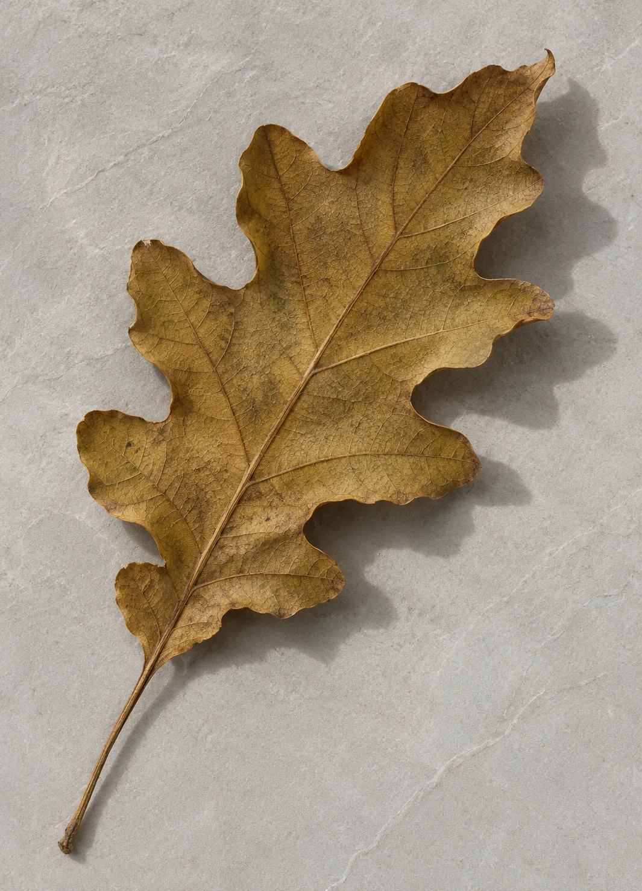

Aura & Form / Field notes
A leaf
against
the light.
Begin at the stalk and follow the ridge to the tip. The second outline belongs to the shadow.
Read the oak field note
Field note
Two outlines
The first edge keeps the shape of the leaf. Each lobe meets a small hollow. The second edge falls beyond it, softer where the leaf lifts from the stone.
Following the central vein brings the eye back to the stem. The space between the two outlines is easiest to find at the curled edge.